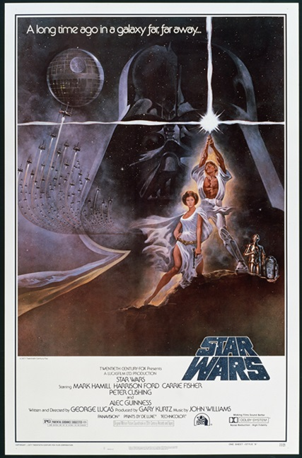
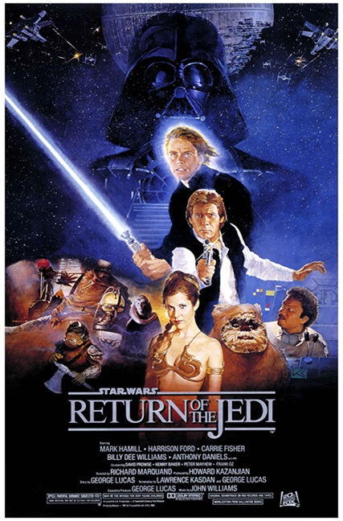

Star War - Trilogia Original

Episodio IV - Una nueva esperanza
La trama describe la historia de un grupo de guerrilleros —conocidos como la Alianza Rebelde— cuyo objetivo es destruir la estación espacial Estrella de la Muerte, creada por el opresor Imperio Galáctico. Desde una perspectiva general, la historia se enfoca en un joven granjero llamado Luke Skywalker, quien, de forma repentina, se convertirá en un héroe conforme acompaña al Maestro Jedi Obi-Wan Kenobi en una misión que lo llevará a unirse a la Alianza Rebelde para ayudarles a destruir la estación espacial del Imperio.

Episodio V - El Imperio contraataca
La ficción de la película se sitúa tres años después de la destrucción de la estación espacial de combate conocida como la Estrella de la Muerte, destrucción acaecida al final del episodio anterior, Una Nueva Esperanza, estrenada en el año 1977. En El Imperio contraataca Luke Skywalker, Han Solo, Leia Organa y el resto de la Alianza Rebelde son perseguidos por Darth Vader y las fuerzas de élite del Imperio Galáctico. En este episodio se desarrolla la historia de amor entre Han y Leia, mientras que Luke aprende más sobre los caminos de la Fuerza de la mano del maestro Yoda. Con Han y Leia capturados por el Imperio, Luke luchará contra Darth Vader en una confrontación sin igual, pero Vader esconde una terrible revelación.

Episodio VI - El retorno del Jedi
"Hace mucho tiempo en una galaxia muy, muy lejana [...] Luke Skywalker ha regresado a Tatooine, su planeta de origen, para intentar rescatar a su amigo Han Solo de las garras del malvado Jabba, el Hutt. Pero Luke ignora que el IMPERIO GALÁCTICO ha comenzado en secreto la construcción de una nueva estación espacial armada, más poderosa que la temida Estrella de la Muerte. Una vez terminada, este arma suprema significará la aniquilación del pequeño grupo de rebeldes que lucha para restaurar la libertad en la galaxia…"